1. Overview
Editors of a space open a page straight into the editor. Your changes are saved as you type (All changes saved at the top), and everyone editing the page sees them at once; see Editing together. Readers keep seeing the published version until someone chooses Publish; see Drafts and publishing.
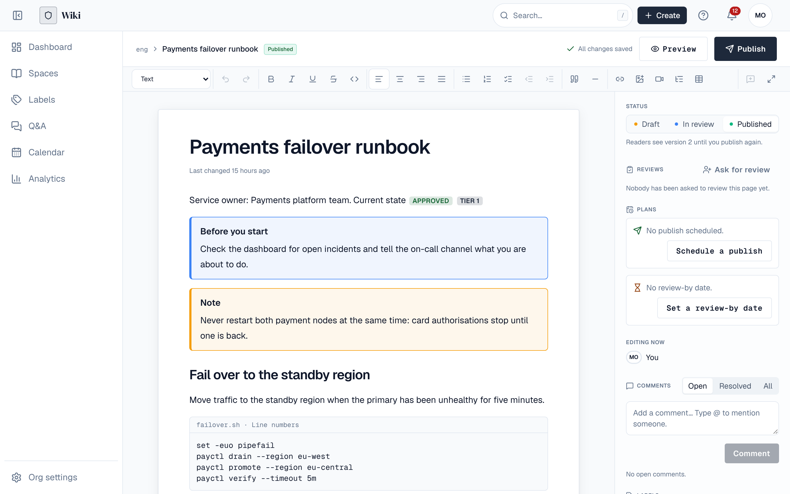
- The top bar holds the breadcrumbs, the save state, who else is here, Preview (the draft as readers will see it) and Publish.
- The side panel holds the page's Status, reviews, plans (scheduled publishing and review-by dates), versions, heading and figure numbers, comments, labels, the pages under this one, Move and Delete.
- If the connection drops, the editor says Offline. Reconnecting… and keeps your changes in the tab until it is back.
2. The toolbar
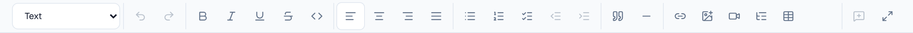
| Group | Tools |
|---|---|
| Text style | Text, Heading 1, Heading 2, Heading 3, Code block |
| History | Undo, Redo (your own changes only, not other people's) |
| Marks | Bold, Italic, Underline, Strikethrough, Code, Text colour, Highlight |
| Alignment | Align left, Center, Align right, Justify |
| Lists | Bulleted list, Numbered list, Checklist, Outdent, Indent |
| Blocks | Quote, Divider |
| Insert | Link, Insert image, Insert video, Insert table of contents, Insert table, Insert file, Insert attachments list, Insert gallery, Date |
| Layout | One column, Two columns, Three columns, Wide left, Wide right for the section the cursor is in |
| Other | Comment on selection, Full screen |
When a table, image, video or block is selected, its own settings appear in the toolbar (Table, Image settings, Video settings, Block settings). On a phone, the toolbar scrolls sideways.
3. The "/" menu
Type / at the start of a line or after a space to insert any block. Keep typing to narrow the list, use ↑ and ↓ to move, Enter to insert and Esc to close it.
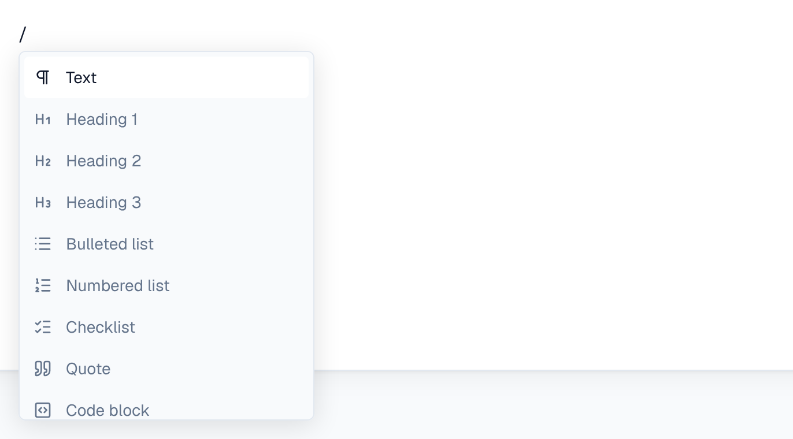
It lists text styles and lists, Quote, Code block, Divider, Columns, Table, Spreadsheet table, Image, Video, Table of contents, Date, and the blocks described in Blocks and macros: Mermaid diagrams, HTML blocks (when turned on), panels, expand, decision, status, anchor, excerpt, page properties, child pages, page tree, recently updated, include page, include excerpt, page properties report, a whiteboard (Enterprise), blocks from plugins, and the newer ones: File, Attachments list and Gallery (Files and attachments), Slides (Slides), Pages by label, Blog posts, Contributors and Change history (Lists of pages), Task report (Tasks) and Link card (Link cards).
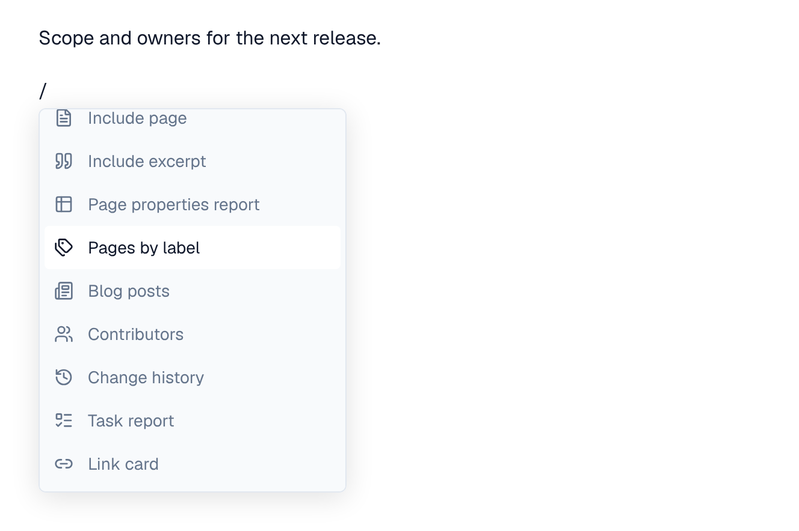
While the Wiki is being upgraded, blocks that came with the new version appear in the menu only once every server runs it. See Upgrades.
4. Sections
The editor treats a page as a stack of sections, so a whole piece can be moved or formatted at once. You don't make sections; the editor works them out from what you write, and nothing extra is saved with the page.
- Each heading is a section.
- Text that runs together (paragraphs, lists and quotes with no empty line between them) is one section. An empty line splits it into two.
- Every other block is a section of its own: a panel or other macro, a table, an image, a video, a code block, a divider, a plugin's block, and a row of columns.
Rest the pointer on a section for a moment: it is tinted slightly and a handle appears at its right edge. Nothing shows while you type. The handle opens the section's menu.
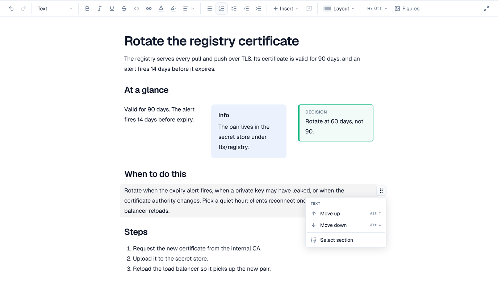
| Action | Does |
|---|---|
| Move up, Move down | Trades places with the section above or below. Empty lines between sections stay where they are, and an empty line is added where two pieces of text would otherwise run together. Alt+↑ and Alt+↓ do the same for the section the cursor is in. |
| Select section | Selects everything in the section, so the toolbar's formatting (bold, underline, text colour, highlight, alignment) applies to all of it. Esc lets go. |
A heading moves on its own; the text under it is a separate section. On a phone or tablet the handle shows for the section the cursor is in.
5. Text colour and highlight
Select some text, or a whole section with Select section, and choose Text colour or Highlight in the toolbar. Each offers six colours that follow the reader's theme (light, dark or high contrast), so coloured text stays readable for everyone. Remove text colour and Remove highlight take it off again.
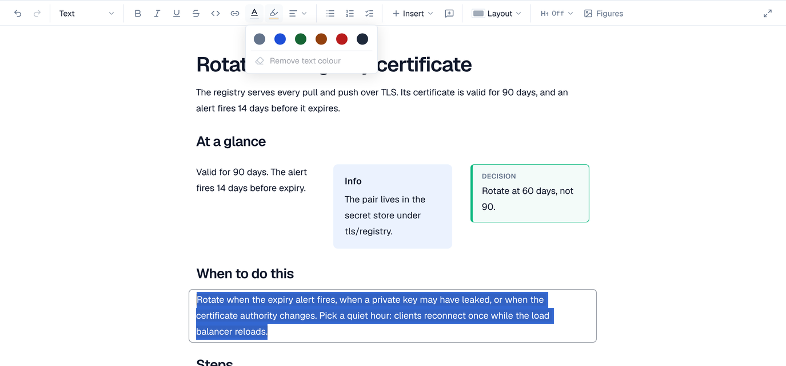
6. Columns
Layout in the toolbar puts the section the cursor is in into a row of columns: Two columns or Three columns of equal width, Wide left (two thirds and one third) or Wide right (one third and two thirds). What you had written goes into the first column. /columns inserts a three-column row too.
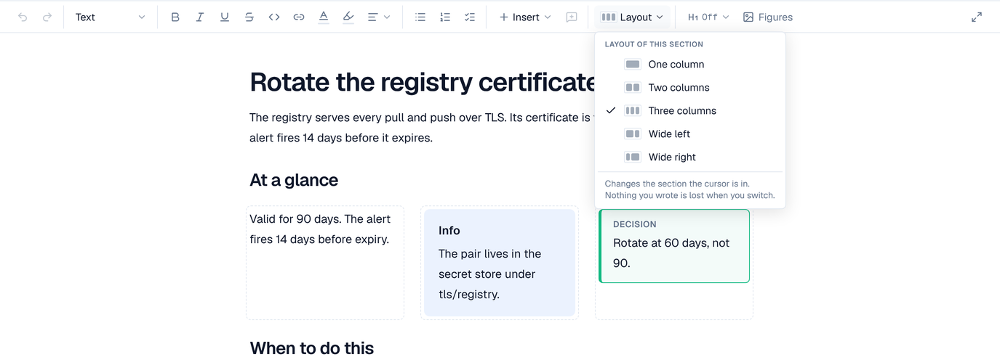
- A column holds anything a page does: text, lists, images, tables, panels and other macros. A block stays inside the column it is in and is never wider than it.
- Switching between the layouts keeps what you wrote: going from three columns to two adds the third column's content to the second. One column turns the row back into ordinary blocks.
- The whole row is one section: its handle moves all the columns together.
- The dashed outlines around the columns show only while the pointer or the cursor is in the row. Readers never see them.
- On a phone, and on any screen narrower than a tablet, columns stack one under the other, first column first.
- Pages imported from Confluence keep their page layouts as rows of columns.
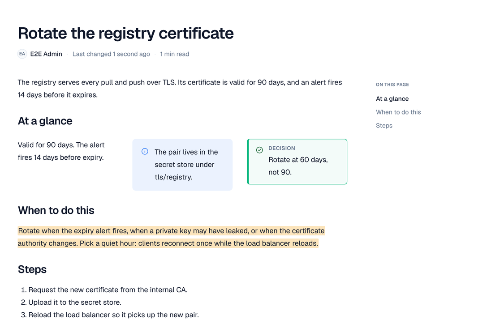
A row of columns can't be put inside another row, a table or a panel. Word and PDF exports print the columns one after the other.
7. Page width
A page is as wide as its editors choose. The width menu at the end of the toolbar, beside Figures, offers Narrow (the width for reading text, and what every page has until you change it), Medium (room for tables and rows of columns, with a margin on both sides) and Full width (the whole screen, for wide tables, diagrams and dashboards).
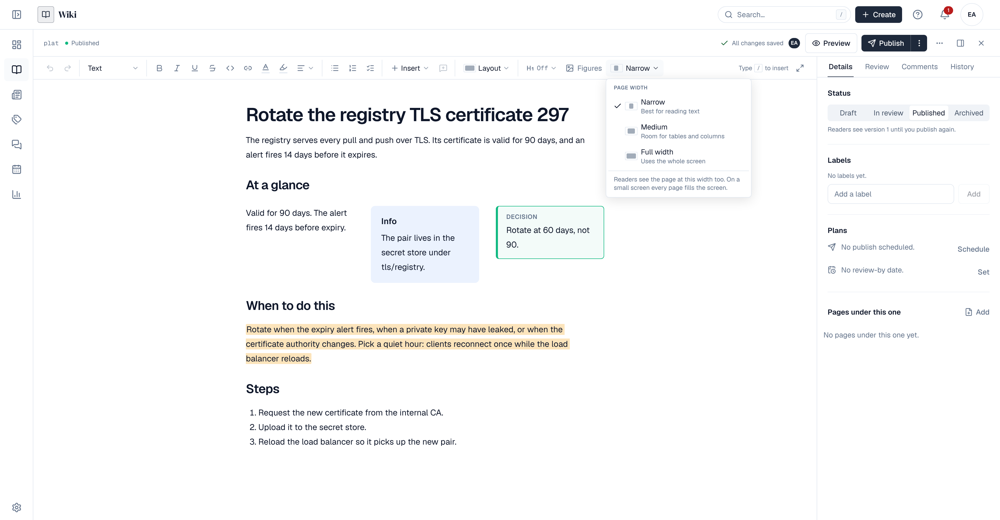
- The editor changes at once, so you write at the width people read.
- The width belongs to the page, like heading numbers: readers see the new width as soon as you pick it, without publishing, and they have no control of their own. Everyone who edits the page can change it.
- On a phone, and on any screen narrower than the chosen width, the page fills the screen whatever is chosen.
- Lines of text get long at full width on a big screen. A row of columns keeps them short.
- A copy of a page starts narrow. Word and PDF exports use the paper's width.
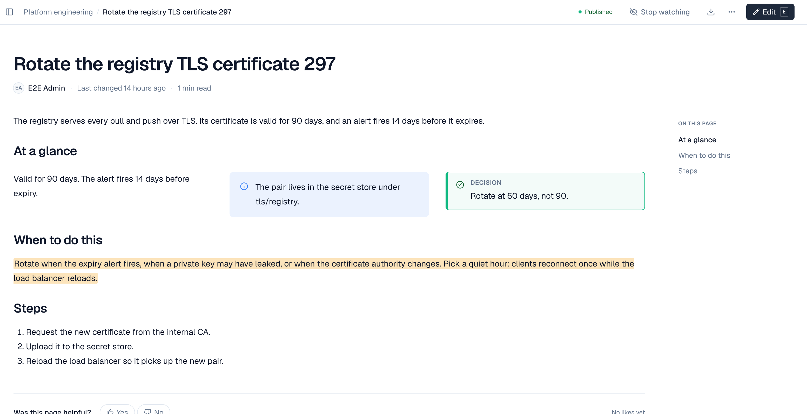
8. Headings and heading numbers
Use Heading 1 to Heading 3 to structure a page. Each heading gets an anchor from its words, so you can link to it with #section-… after the page's address, and a table of contents lists it.
Heading numbers in the side panel numbers a page's headings: None, 1, 1.1, 1.1.1 or 1., 1.1., a.. Numbers are added when the page is shown; the text stays as you write it, so moving a section renumbers everything after it.
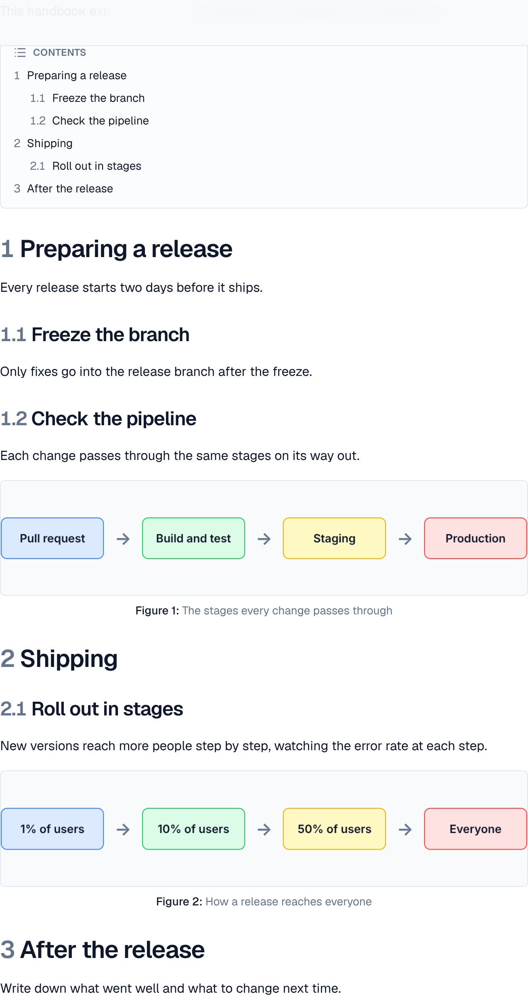
Insert table of contents lists the page's headings where you put it. Its settings choose the Headings to list (top level only, two levels or three levels) and whether to Number the entries; when the page numbers its headings, the same numbers are used.
9. Lists and checklists
Bulleted list, Numbered list and Checklist start a list; Indent and Outdent (or Tab and Shift+Tab) nest an item. Readers see checklist boxes as you left them. A checklist item is a task: @ someone to assign it and // to give it a due date; see Tasks and task reports.
10. Dates
Type // at the start of a line or after a space, or choose /date or Insert → Date, to put a date in the text: pick a day, Today or Tomorrow. Each reader sees it in their own language and date format. Select a date to change it. In an open task, a date that has passed is shown as overdue.
11. Links and mentions
Select text and choose Link to link it to a web address (https://…), an email (mailto:…) or a path in the Wiki (/spaces/…). Type @ and part of a name to mention someone; see Profile and notifications.
12. Tables
Insert table adds a table with a header row. With the cursor in it, the Table tools add a row below or a column after, delete rows, columns or the table, turn the header row on or off, and merge or split cells. For sums and other calculations use a Spreadsheet table; see Blocks and macros.
13. Images and videos
Insert image, or paste or drop an image onto the page. Image settings sets the Alternative text (describe the image for people who can't see it), a Caption, the Width (a quarter, half, three quarters or full width) and the Position. With Figure numbers turned on in the side panel, captioned images are numbered Figure 1, Figure 2… in reading order.
Images can be PNG, JPEG, GIF or WebP up to 20 MB. For videos and limits see Images and videos and Blocks and macros. Dropping a PDF or any other file that isn't an image adds a File block; see Files and attachments.
14. Full screen
Full screen at the right end of the toolbar hides the sidebar and header so only the page and toolbar remain. Leave full screen, or Esc, brings them back.
15. Keyboard shortcuts
Use Ctrl on Windows and Linux, ⌘ on a Mac.
| Shortcut | Does |
|---|---|
| Ctrl+B / Ctrl+I / Ctrl+U | Bold / italic / underline |
| Ctrl+Shift+S | Strikethrough |
| Ctrl+E | Code |
| Ctrl+Alt+1, 2, 3 | Heading 1, 2, 3 |
| Ctrl+Alt+0 | Text |
| Ctrl+Shift+8 / Ctrl+Shift+7 / Ctrl+Shift+9 | Bulleted list / numbered list / checklist |
| Ctrl+Shift+B | Quote |
| Ctrl+Z / Ctrl+Shift+Z or Ctrl+Y | Undo / redo your own changes |
| Alt+↑ / Alt+↓ | Move the section the cursor is in up / down |
| Shift+Enter | Line break inside a paragraph |
| / | The "/" menu |
| // | Insert a date |
| @ | Mention someone |
| Ctrl+K | Search |
| Esc | Close a menu, let go of a selected section, leave full screen |
Markdown-style typing works too: # to ### at the start of a line make headings, - or * a bulleted list, 1. a numbered list, [ ] a checklist item, > a quote, three backticks a code block and --- a divider. bold, *italic* and ` code ` format the text as you type.